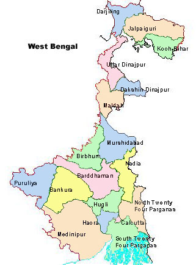

Chief Minister of Tamil Nadu
J Jayalalithaa
Chief Minister of West Bengal
Mamata Banerjee
Chief Minister of Assam
Tarun Gogoi
Chief Minister of Puducherry
N Rangasamy
TAMIL NADU
---------------------------
WEST BENGAL
----------------------------
ASSAM
-------------------------------
PUDUCHERRY
-------------------------------
Tamil Nadu
West Bengal

Assam

Puducherry
Tamil Nadu
---------------------------------
Assam
-------------------------
Assam
--------------------------
Assam
---------------------------
Assam
----------------------------
West Bengal
-----------------------------
Puducherry
------------------------------
------------------------